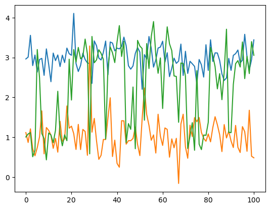
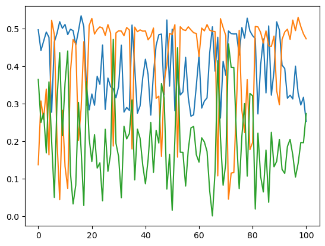

Usage
We are going over the main functionality of the FlowCytometry package.
For this tutorial you will need to have installed the following packages:
- FlowCytometry
- Plots for the visualization of the results
- CSV for uploading files
- DataFrames as storage
First we upload the required packages.
using FlowCytometry
using PyPlot
using CSV
using DataFrames┌ Info: Precompiling FlowCytometry [dda4a566-a714-4635-9e97-d7f3f719a55d]
└ @ Base loading.jl:1342
WARNING: Method definition compensate!(FlowCytometry.FlowCytometryExperiment) in module Compensation at /home/gabriel/Documents/FlowCytometry/src/compensation.jl:155 overwritten at /home/gabriel/Documents/FlowCytometry/src/compensation.jl:188.
** incremental compilation may be fatally broken for this module **
[33m[1m┌ [22m[39m[33m[1mWarning: [22m[39mReplacing docs for `FlowCytometry.Compensation.compensate! :: Tuple{FlowCytometry.FlowCytometryExperiment}` in module `FlowCytometry.Compensation`
[33m[1m└ [22m[39m[90m@ Base.Docs docs/Docs.jl:240[39m<div style="padding: 1em; background-color: #f8d6da; border: 1px solid #f5c6cb; font-weight: bold;"> <p>The WebIO Jupyter extension was not detected. See the <a href="https://juliagizmos.github.io/WebIO.jl/latest/providers/ijulia/" target="_blank"> WebIO Jupyter integration documentation </a> for more information. </div>
Basics of the FlowCytometry.jl structures
The Flow cytometry package works around a few structures that help with the upload and manipulation of flow cytometry data.
The basic structure is FlowCytometryExperiment. The structure follows a very similar struture to the AnnData object for scRNA seq analysis of Scanpy.
Loading
We can construct it manually starting from a measures matrix. Let's make a initialization of experiment with 100 cells and 10 channels.
fcs = FlowCytometryExperiment(rand(100,10));Alternatively, we can directly load a fcs experiment.
fcs = loadFCExperiment("FlowRepository_FR-FCM-Z2SS_files/Compensation Controls_APC Stained Control_006.fcs");Accesing the properties
The structure contains several properties useful for the analysis.
- X Matrix of Cells X Channel of the experiment.
- obs Dataframe with all the metainformation of the cells
- var Dataframe with all the metainformation of the channels
- obsm Dictionary containing transformed matrices of the original data.
- layers Dictionary containing Cells X Channel matrices of data that are required to control (e.g. Raw matrix).
- gates List of Gate and Gate set objects
- uns Dictionary contining all the metainformation of algorithms applied to the data.
The data uploaded before contains for now a matrix with 5000 cells and 35 channels.
fcs.XThe experiment metainformation has been stored in .uns["ExperimentInformation"].
fcs.uns["ExperimentInformation"]And we have the name of the channels in .channels.
fcs.channelsIt is useful to note than the channels can be accessed directly by calling directly to the FlowCytometryExperiment object as fcs[channel_of_interest]. Let's use this property for ploting a scatterplot of two channels.
fig, ax = subplots(1,1)
ax.scatter(fcs["APC-A"],fcs["APC-R700-A"],s=10)
ax.set_xlabel("APC-R700-A")
ax.set_ylabel("APC-A")
ax.set_title("Control experiment APC Dye")We can already see from this data the spillover effect of APC-A to APC-R700-A.
Gating
Flow compensation usually requires of quality control of the cells and measures change in proportion of cells between experimennts to see if there is changes in the number of cells present in specific regions of the channel space.
We can define gates for our experiment in several ways.
Manual gating
We can define a manual gates by calling the function Gating.manualGating!. This will start an app that can be accessed in any browser by writing localhost::channel, for the channel prompted by the function. When desiring to stop adding gates, you will have just to kill the app with ctr+C or similar and the gates will be added to the FlowCytometryExperiment object.
Gating.manualGating!(fcs)When calling the function, in the browser you will see a page like this:

Automatic gating
using Statistics, LinearAlgebradet(cov(rand(20,20)))mean(rand(4,5),dims=1)[1,:]automaticQC!(fcs)fig,ax = subplots(1,5,figsize=[25,3])
ax[1].fill([i[1] for i in fcs.uns["automaticQC"]["Step1_TrimOutliers"]],[i[2] for i in fcs.uns["automaticQC"]["Step1_TrimOutliers"]],alpha=0.5,zorder=-1,color="lightBlue")
ax[1].scatter(fcs["FSC-A"],fcs["SSC-A"],s=2)
ax[2].fill([i[1] for i in fcs.uns["automaticQC"]["Step1_TrimOutliers"]],[i[2] for i in fcs.uns["automaticQC"]["Step1_TrimOutliers"]],alpha=0.5,zorder=-1,color="lightBlue")
ax[2].fill([i[1] for i in fcs.uns["automaticQC"]["Step2_ExcludeMaximums"]],[i[2] for i in fcs.uns["automaticQC"]["Step2_ExcludeMaximums"]],alpha=0.5,zorder=-1,color="orange")
ax[2].scatter(fcs["FSC-A"],fcs["SSC-A"],c=fcs.obs[:,"automaticQC_density1"],cmap="Spectral_r",s=2)
ax[2].scatter(fcs.uns["automaticQC"]["Step3_LocalMaximums"][1],fcs.uns["automaticQC"]["Step3_LocalMaximums"][2],color="k",s=50)
ax[2].scatter([fcs.uns["automaticQC"]["Step4_GlobalMaximum"][1]],[fcs.uns["automaticQC"]["Step4_GlobalMaximum"][2]],color="orange",s=50)
ax[3].fill([i[1] for i in fcs.uns["automaticQC"]["Step1_TrimOutliers"]],[i[2] for i in fcs.uns["automaticQC"]["Step1_TrimOutliers"]],alpha=0.5,zorder=-1,color="lightBlue")
ax[3].fill([i[1] for i in fcs.uns["automaticQC"]["Step5_Tesselation"]],[i[2] for i in fcs.uns["automaticQC"]["Step5_Tesselation"]],alpha=0.5,zorder=-1,color="orange")
ax[3].scatter(fcs["FSC-A"],fcs["SSC-A"],c=fcs.obs[:,"automaticQC_density1"],cmap="Spectral_r",s=2)
ax[3].scatter(fcs.uns["automaticQC"]["Step3_LocalMaximums"][1],fcs.uns["automaticQC"]["Step3_LocalMaximums"][2],color="k",s=50)
ax[3].scatter([fcs.uns["automaticQC"]["Step4_GlobalMaximum"][1]],[fcs.uns["automaticQC"]["Step4_GlobalMaximum"][2]],color="orange",s=50)
ax[4].fill([i[1] for i in fcs.uns["automaticQC"]["Step1_TrimOutliers"]],[i[2] for i in fcs.uns["automaticQC"]["Step1_TrimOutliers"]],alpha=0.5,zorder=-1,color="lightBlue")
ax[4].fill([i[1] for i in fcs.uns["automaticQC"]["Step6_Rectangle"]],[i[2] for i in fcs.uns["automaticQC"]["Step6_Rectangle"]],alpha=0.5,zorder=-1,color="orange")
ax[4].scatter(fcs["FSC-A"],fcs["SSC-A"],c=fcs.obs[:,"automaticQC_density1"],cmap="Spectral_r",s=2)
ax[4].scatter(fcs.uns["automaticQC"]["Step3_LocalMaximums"][1],fcs.uns["automaticQC"]["Step3_LocalMaximums"][2],color="k",s=50)
ax[4].scatter([fcs.uns["automaticQC"]["Step4_GlobalMaximum"][1]],[fcs.uns["automaticQC"]["Step4_GlobalMaximum"][2]],color="orange",s=50)
ax[5].fill([i[1] for i in fcs.gates["automaticQC"].polygon],[i[2] for i in fcs.gates["automaticQC"].polygon],alpha=1,facecolor="none",edgecolor="red")
ax[5].scatter(fcs["FSC-A"],fcs["SSC-A"],c=fcs.obs[:,"automaticQC_density1"],cmap="Spectral_r",s=2)
ax[5].scatter(fcs.uns["automaticQC"]["Step3_LocalMaximums"][1],fcs.uns["automaticQC"]["Step3_LocalMaximums"][2],color="k",s=50)
ax[5].scatter([fcs.uns["automaticQC"]["Step4_GlobalMaximum"][1]],[fcs.uns["automaticQC"]["Step4_GlobalMaximum"][2]],color="orange",s=50)
for a in ax
a.set_xlim(0,30E4)
a.set_ylim(0,30E4)
a.set_xticks([0,30E4])
a.set_yticks([0,30E4])
end
Compensation
Most part of flow cytometry experiments use several signaling channels. Some of the most common experimental as flow cytometry or spectral cytometry suffer from spillover/mixing of the information among the channels. To correct this behavior and having uncoupled signals, one-fluorophore control experiments are performed in order to compute what is called the compensation matrice to uncouple the channels.
Loading control experiments
We can upload the control experiments in a special structure named FlowCytometryControl, that is more less a container of diferent FlowCytometryExperiment. Each control experiment is assigned a channel that corresponds to the maximum peack of its spectrum. This is very important to when computing the compensation matrix. The best way of uploading the data is by assigning the different control files to the according channels.
In this example we have a file that has already this assignation:
controls = CSV.read("FlowRepository_FR-FCM-Z2SS_files/attachments/fcs_control.csv",FlowCytometry.DataFrame)
print(controls[1:5,:])We will construct a dictionary assigning file to channel.
fileChannelAssignation = Dict([string("FlowRepository_FR-FCM-Z2SS_files/",i)=>String(j) for (i,j) in eachrow(controls[:,["filename","dye"]])])Now we can load the data.
fcsControl = loadFCControls(fileChannelAssignation);Compute compensation matrix
With the data uploaded we can compute the compensation matrix from the FlowCytometryControl object.
Compensation.computeCompensationMatrix!(fcsControl)Compensate datasets
With the compensated matrix computed, we can compensate the data. There are several methods of proceeding with the compensation.
- Compensate the control data
experimentUncompensated = deepcopy(fcsControl.controls["APC-A"]) #Make a copy before compensation
Compensation.compensate!(fcsControl)Now we can visualize the results of the compensation and see that it has been correctly compensated.
experiment = fcsControl.controls["APC-A"]
scatter(experimentUncompensated["APC-A"],experimentUncompensated["APC-R700-A"],label="Not compensated")
scatter!(experiment["APC-A"],experiment["APC-R700-A"],label="Compensated",xlabel="APC-A",ylabel="APC-R700-A",title="Control APC-A")
xlabel!("APC-A")
ylabel!("APC-R700-A")- Compensate the a
FlowCytometryExperimentobject with aFlowCytometryControlobject
fcsCopy = deepcopy(fcs)
Compensation.compensate!(fcsCopy,control=fcsControl)- Assign the compensation matrix of a
FlowCytometryControlto aFlowCytometryExperimentand then compensate.
fcsCopy = deepcopy(fcs)
Compensation.assignCompensation!(fcsCopy,control=fcsControl)
Compensation.compensate!(fcsCopy)Dimensionality reduction
In some datasets, the data is very high dimensional and visualizing all pairwise steps may not be possible or hard to interpret. For that reason, we can apply several dimensionality reduction methods to summarize the data.
Let's see that by constructing a toy dataset with two cell types. This data doesn't show well separated by any particular plot in of two of the variables. However, PCA analysis or UMAP projection are able to show the separation between the two clusters.
All this visualizations are stored as transformations of the original data in .obms.
X = [randn(1000,10); (randn(1000,10).+[0 2 0 2 0 2 0 2 0 0])];
fcs = FlowCytometryExperiment(X);DimensionalityReduction.pca!(fcs)DimensionalityReduction.umap!(fcs)plot(scatter(fcs["1"],fcs["2"],title="Variables"),
scatter(fcs.obsm["pca"][:,1],fcs.obsm["pca"][:,2],title="PC"),
scatter(fcs.obsm["umap"][:,1],fcs.obsm["umap"][:,2],title="UMAP"),
layout=(1,3),legend=false,size=[1200,400])Clustering
One of the main uses of cytometry data is to cluster data by cell types. Several methods are already implemented in the package. Resuing the toy model before.
Clustering.kmeans!(fcs,n_components=2)Clustering.agglomerative!(fcs,n_components=2)plot(scatter(fcs.obsm["pca"][:,1],fcs.obsm["pca"][:,2],markercolor=Array(fcs.obs[:,"kmeans"]),title="KMeans"),
scatter(fcs.obsm["pca"][:,1],fcs.obsm["pca"][:,2],markercolor=Array(fcs.obs[:,"agglomerative"]),title="Agglomerative"),
layout=(1,2),legend=false,size=[800,400])using Distributionsc = [.1 .01 .01;.01 .1 .02;.01 .02 .2]
X = permutedims(rand(MultivariateNormal([0,1,2],c),1000));
Y = permutedims(rand(MultivariateNormal([0,3,2],c),1000));
fcs = FlowCytometryExperiment([X;Y]);Clustering.gaussianMixture!(fcs,k=3,initialization="kmeans",verbose=true)[32mProgress: 100%|█████████████████████████████████████████| Time: 0:00:03[39m
[34m iter: 2000[39mplot(fcs.uns["gaussianMixture"]["means"][:,1,2])
plot(fcs.uns["gaussianMixture"]["means"][:,2,2])
plot(fcs.uns["gaussianMixture"]["means"][:,3,2])
1-element Vector{PyCall.PyObject}:
PyObject <matplotlib.lines.Line2D object at 0x7f3aad1677f0>for i in 1:3
plot(fcs.uns["gaussianMixture"]["weights"][:,i])
end